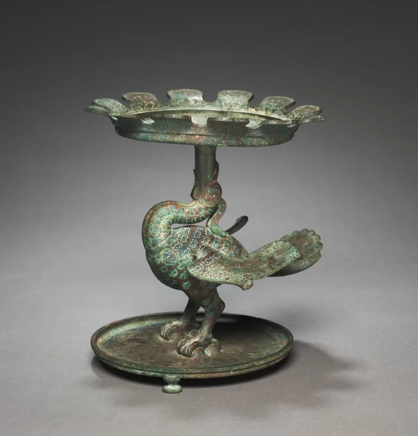

河洛数字博物馆
DIGITAL EXHIBIT THEATRE
馆藏
数字展厅
预约参观
中
○
01 / 青铜鼎
一鼎之间
细看青铜
一件器物不是一张静止的图片。旋转它，靠近它，从纹样的起伏看见数千年前的铸造与礼制。
启动 3D 展项
器物不是陈列，
而是每一幕的主角。
在剧场中，每次进入只聚焦一件器物。材料、光线、声音与文字共同建立一个可停留的观看现场。
第一幕 · 礼与权力
青铜鼎
第二幕 · 天与玉
玉璧

第三幕 · 河与鸟
水鸟青铜器